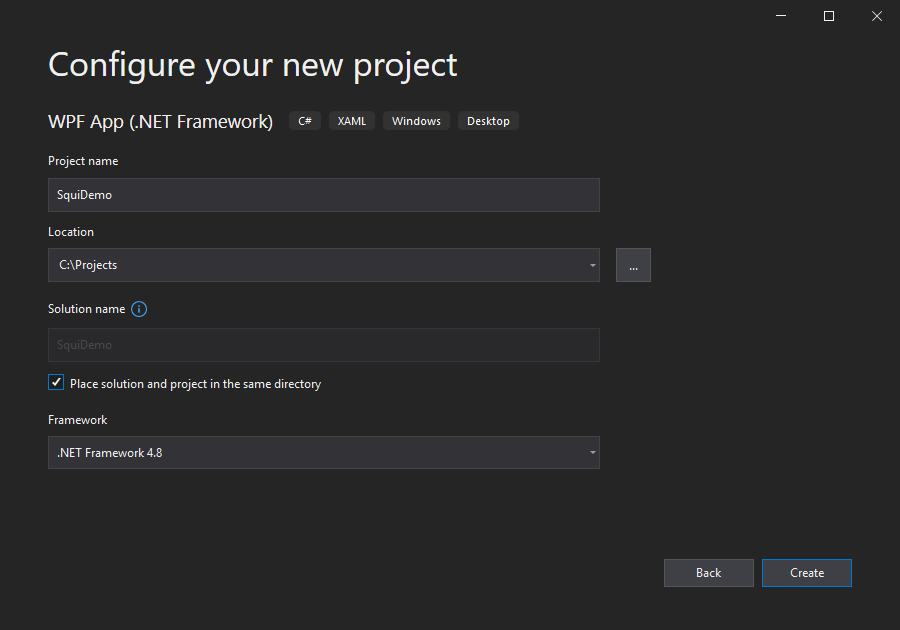
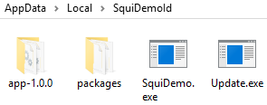

Déployer une application .NET avec Squirrel.Windows
En conséquence à la COVID 19, le nombre de collaborateur en télétravail à exploser.
Nous avons dû adapter nos applications pour les déployer sur la flotte grandissante d'ordinateur portable.
Dans ce cadre, nous avons opté pour Squirrel.Windows pour gérer l'installation et les mises à jour.
Quésaco?
Squirrel
est un outil facilitant l'installation et la mise à jour d'une application bureau sur Windows.
Squirrel.Windows est maintenue dans GitHub sous la licence MIT.
Obsolète?
L'avenir de Squirrel est incertain.
Comme il est indiqué dans le ticket DEPRECATED, sad... #1469,
la principale mainteneuse du projet ne semble pas pouvoir continuer à le maintenir.
Malgré cela, nous avons décidés d'utiliser Squirrel.Windows.
Squirrel.Windows est un projet stable et fonctionnel.
Mais le plus convaincant, c'est que le projet est sous la licence MIT, une licence libre très permissive.
Ainsi, nous pouvions très bien faire un fork pour appliquer des correctifs ou adapter l'outil à notre besoin.
De même, il est fort probable qu'une autre société reprenne le flambeau, car la majorité des applications développées avec Electron
utilise Squirrel
pour installer et mettre à jour sous Windows.
Notament des applications bien connues comme Discord, Slack, Teams, ...
1) Adapter l'application de burreau .NET
Contrairement à de nombreux outils similaires où un programme auxiliaire (launcher) qui s'occupe des mises à jour
Squirrel.Windows a la particularité que c'est l'application elle-même qui va se mettre à jour.
En avantage, on peut adapter le processus de mise à jour à notre besoin.
En contrepartie, il faut modifier le code de l'application pour implémenter la mise à jour.
Hereusement, Squirrel.Windows par son package NuGet nous facilite le travail.
Pour cette démonstration, nous allons créer une nouvelle application WPF en .NET Framework :

Lorsque Squirrel.Windows va générer le raccourcis bureau, les exécutables où le nom contient "Squirrel" seront ignorés.
Je déconseille fortement d'utiliser le terme "Squirrel" dans le nom du projet.
Le ticket GitHub suivant approfondit ce point.
Généralement, les applications disposent d'un bouton pour vérifier qu'une mise à jour est disponible.
Mais il est aussi possible d'utiliser un timer qui va régulièrement vérifier si une mise à jour est disponible.
Pour simplifier la démonstration, la mise à jour sera effectuée au démarrage de l'application, donc dans App.xaml.cs :
publicpartialclassApp : Application
{
protectedoverrideasyncvoidOnStartup(StartupEventArgs e)
{
using (var updateManager = new UpdateManager(@"C:\SquiDemoReleases"))
{
var releaseEntry = await updateManager.UpdateApp();
}
var main = new MainWindow();
main.Show();
}
}
Généralement, l'application et les mises à jour sont déployées sur un serveur web et le chemin d'accès est une URL.
Dans l'exemple, les mises à jour seront stockées en local dans le dossier "C:\SquiDemoReleases".
La méthode UpdateApp effectue les actions suivantes :
Vérifie si une mise à jour est disponible
Télécharge la mise à jour
Installe la mise à jour
Il s'agit de la manière la plus simple pour effectuer la mise à jour.
Pour les scénarios plus avancées, UpdateManager dispose d'autres méthodes pour décomposer chaque étape.
Une fois l'application mis à jour, il faut que l'application redémarre pour exécuter la dernière version.
Pour cela, la méthode UpdateApp retourne comme information la version installée ou nulle si aucune nouvelle version était disponible.
Ensuite, la méthode RestartApp permet de redémarrer l'application en dernière version.
Ainsi, la méthode OnStartup devient :
protectedoverrideasyncvoidOnStartup(StartupEventArgs e)
{
ReleaseEntry releaseEntry;
using (var updateManager = new UpdateManager(@"C:\SquiDemoReleases"))
{
releaseEntry = await updateManager.UpdateApp();
}
// Restart after UpdateManager is disposedif (releaseEntry != null)
{
UpdateManager.RestartApp();
}
var main = new MainWindow();
main.Show();
}
Il est nécessaire de libérer les instances UpdateManager avant de redémarrer l'application.
Le ticket GitHub suivant approfondit ce point.
2) Générer l'application
Pour générer l'application et les mises à jour, il faut dans un premier temps générer un package NuGet intermédiaire contenant l'application.
Le plus simple étant d'ajouter au projet un fichier .nuspec :
<?xml version="1.0"?><package><metadata><id>SquiDemoId</id><title>SquiDemo Title</title><version>1.0.0</version><description>Demo with Squirrel.Windows</description><authors>Space Monkey</authors></metadata><files><filesrc="*.*"target="lib\net45\"exclude="*.pdb;*.vshost.*"/></files></package>
La balise "id" sert à définir plusieurs paramètres comme le dossier d'installation.
Pour ce paramètre, il faut utiliser uniquement des caractères alphanumériques (même l'espace est proscrit).
Par la suite, "[NuGet Id]" indiquera que la valeur provient de ce paramètre.
La balise "title" sert à définir plusieurs paramètres comme le nom de l'application dans Windows.
Par la suite, "[NuGet Title]" indiquera que la valeur provient de ce paramètre.
La balise "file" indique les fichiers de l'application.
Il est nécessaire de placer les fichiers dans "lib\net45",
car Squirrel.Windows récupère les fichiers uniquement dans ce dossier.
D'autres balises nuspec sont utilisées par Squirrel.Windows, vous pouvez retrouver la liste au lien suivant :
NuGet Package Metadata
Ensuite, il faut compiler le projet en Release,
puis exécuter la commande suivante pour générer le package intermédiaire (dans l'exemple "SquiDemoId.1.0.0.nupkg") :
L'instruction Squirrel provient du package NuGet Squirrel.Windows.
Elle est donc disponible depuis Package Manager Console dans Visual Studio.
Il est aussi possible de télécharger le package NuGet Squirrel.Windows et d'extraire l'utilitaire.
Cela va générer les fichiers suivants :
RELEASES : Un fichier texte référençant les versions disponibles de l'application.
Setup.exe : Un exécutable permettant d'installer l'application pour un utilisateur.
Setup.msi : Un installeur pour déployer l'application à tous les utilisateurs.
SquiDemoId-1.0.0-full.nupkg : L'application empaqueté au format NuGet.
3) Déployer l'application (optionnel)
Le fichier Setup.msi permet de déployer l'application à l'ensemble des utilisateurs du poste.
Il n'installe pas l'application, mais lorsqu'un utilisateur ouvrira sa session l'installation démarrera automatiquement.
C'est la méthode à privilégier pour déployer par Group Policy ou avec un outil de gestion de parc comme Microsoft Intune.
"HKEY_LOCAL_MACHINE\SOFTWARE\WOW6432Node\Microsoft\Windows\CurrentVersion\Run\SquiDemoIdDeployment" :
"C:\Program Files (x86)\SquiDemo Title Deployment\SquiDemoIdDeploymentTool.exe" --checkInstall
Cette clé de registre permet d'exécuter à chaque ouverture de session d'un utilisateur la commande ci-dessus.
La commande quant à elle permet de vérifier si l'application est installée et dans le cas échéant d'effectuer l'installation.
4) Installer l'application
Le fichier Setup.exe permet d'installer l'application. L'installation va :
Créer le dossier "%LocalAppData%\[NuGet Id]" et y ajoute :
"app-[NuGet Version]" qui est un dossier contenant les fichiers de l'application
"package" qui est un dossier servant de cache pour Squirrel.Windows
"[App Executable]" qui démarre l'application en dernière version
"Update.exe" qui est une copie de l'utilitaire "Squirrel.exe"

Contenu pour l'application de démonstration
Créer un raccourcis sur le bureau "[App Executable]" vers "%LocalAppData%\[NuGet Id]\[App Executable]""
Enregistre l'application dans le registre Windows avec la procédure de désinstallation
L'application est installée et peut-être démarrer à partir du raccourcis présent sur le bureau.
5) Mise à jour
Maintenant que l'application est installée, il est possible de déployer une mise à jour.
On commence par générer le package intermédiaire en précisant la nouvelle version :